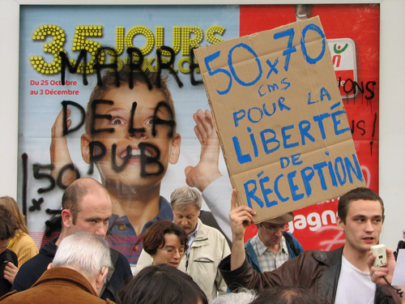

| |
Site dédié à la publication d'informations communiquées par le Collectif des déboulonneurs. En aucun cas ce site n'appelle à des actions illégales. | |
 |
||
|
Accueil du site > Paris > Compte rendu de l’action du 28 octobre 2006 à Paris
Ce samedi 28 octobre 2006, à 15 heures, quand les barbouilleurs et membres actifs du Collectif des déboulonneurs – une douzaine de personnes munies d’un escabeau, d’un tabouret et de feuilles de carton – arrivent sur la petite esplanade qui domine la Seine, à la sortie du métro Quai-de-la-Rapée (Paris 12e), ils sont attendus par quelques dizaines de sympathisants, photographes et journalistes (Le Parisien, Zalea TV…), et aussi d’inconnus, le rendez-vous ayant été annoncé par la presse (notamment Métro du 27 octobre). Une adjointe au maire du 10e (Charlotte Nenner, Verts) est également présente. Il fait plutôt beau, l’ambiance est sereine. Très vite, du haut du tabouret, sont délivrés à la petite foule grossissante (bientôt près de quatre-vingt personnes) les traditionnels messages de bienvenue, de consignes non-violentes, et de rappel des objectifs du collectif. Vers 15 h 30 arrivent quelques fourgonnettes de police, dont les occupants se déversent sur le trottoir tout en restant à l’écart de l’attroupement. Un ou deux « Déboulonneurs » vont à leur rencontre pour leur expliquer les conditions de déroulement de l’action. Au même moment apparaît un second élu parisien, adjoint au maire du 13e (Jean-François Pellissier, Alternatifs). Invité à monter sur le tabouret, revêtu de son écharpe tricolore, il proclame son soutien et souhaite d’avance la bienvenue aux manifestants, l’action devant se dérouler de l’autre côté de la Seine, dans son arrondissement. Vers 15 h 40, la troupe, suivie par les fourgonnettes, s’engage sur le pont d’Austerlitz pour gagner la rive gauche. Le but : de grands panneaux publicitaires déroulants de l’afficheur étatsunien Clear Channel, qui se trouvent sur le mur d’enceinte de la gare d’Austerlitz, au bas du boulevard de l’Hôpital. Dès le but atteint, vers 15 h 50, sept barbouilleurs se mettent au travail. En moins de cinq minutes, deux panneaux sont recouverts de graffitis à la bombe de peinture : « Violence publicitaire », « Pub = virus mental », « Détrônons les étrons », « Marre de la pub ». Et aussi « 50 x 70 cm », rappel de la principale revendication du collectif : ramener la taille de toutes les affiches au format 50x70 cm maximum. 
Photo tofz4u/Denis
Les adeptes de la désobéissance civile et de la légitime réponse se laissent arrêter sans violence par les forces de l’ordre qui, pour les éloigner de leurs sympathisants, leur font traverser le boulevard et s’aligner contre la façade d’un grand car blanc garé devant la grille d’entrée du Jardin des Plantes. L’escabeau et le tabouret sont, quant à eux, embarqués dans une des fourgonnettes. Pendant que, sur le lieu du barbouillage, le rassemblement se termine pacifiquement par quelques prises de parole spontanées et aux accents du « Barbouilleur » (adaptation du « Déserteur » de Boris Vian), les sept désobéissants sont fouillés, délestés de leur carte d’identité, puis embarqués dans le car qui démarre peu après. Vers 16 h 30, ils arrivent au commissariat de l’avenue du Maine (14e), où on leur confisque toutes leurs affaires, y compris ceintures, cravates, mouchoirs et lacets de chaussure. Ils sont palpés puis regroupés dans une cellule exiguë mais ouverte. Les interrogatoires se déroulent dans la sérénité habituelle (l’un des militants déclare avoir agi en vue d’obtenir la Légion d’honneur). Près de quatre heures plus tard, une fois que les barbouilleurs ont regagné la cellule du rez-de-chaussée les uns après les autres, une policière vient leur annoncer qu’ils passeront en correctionnelle en janvier. Petite explosion de joie dans la cellule : le parcours du Collectif des déboulonneurs ne passe-t-il pas nécessairement par les cases « police » et « justice » ? « Petite », parce qu’un procès est toujours, d’une manière ou d’une autre, un moment éprouvant. Les désormais prévenus, définitivement privés de leur escabeau, de leur tabouret et de leurs bombes, sont relâchés vers 20 h 15, après que chacun s’est vu remettre une convocation pour le 12 janvier 2007, à 9 heures, devant la 29e chambre du tribunal correctionnel de Paris (Palais de Justice), pour « avoir volontairement dégradé collectivement des panneaux publicitaires, dégradation dont il est résulté un dommage grave, en l’espèce par de la peinture indellibile (sic) » ; sur le fondement des articles 322-3, 1° et 322-1 al. 1 du Code pénal, les militants encourent 75 000 euros d’amende et cinq ans de prison.. Ce sera donc un procès purement pénal, à moins que l’afficheur ne se constitue partie civile pour réclamer le remboursement de l’éponge et du seau d’eau qui auront servi, le surlendemain, à nettoyer les panneaux. À noter que, sur les sept interpellés, quatre, ne se considérant pas comme des criminels, ont refusé de donner leurs empreintes digitales et d’être photographiés de face et de profil. Ils feront l’objet d’une double procédure. L’avocat du collectif (François Roux) est prévenu dès le soir même de la date du 12 janvier (c’est lui qui s’est occupé du procès de Montpellier, en juin dernier). Un communiqué, adressé à la presse le lendemain matin, fait aussitôt l’objet d’une dépêche de l’Agence France Presse. Le jour même, l’affaire est évoquée sur les ondes d’Europe 1, dans le journal de 18 heures. Des brèves et des articles paraissent les jours suivants (notamment le 30 octobre dans Le Figaro, Métro, 20 Minutes, Le Parisien, Aujourd’hui en France…). Des reportages vidéos :
Les déboulonneurs de pub en action. Par Kristo Johnson
Des reportages photos : Notre communiqué de presse La dépêche AFP Contact : 06 13 53 80 77 – 06 99 06 22 88 |
|
Site utilisant SPIP - Hébergement Ouvaton
|